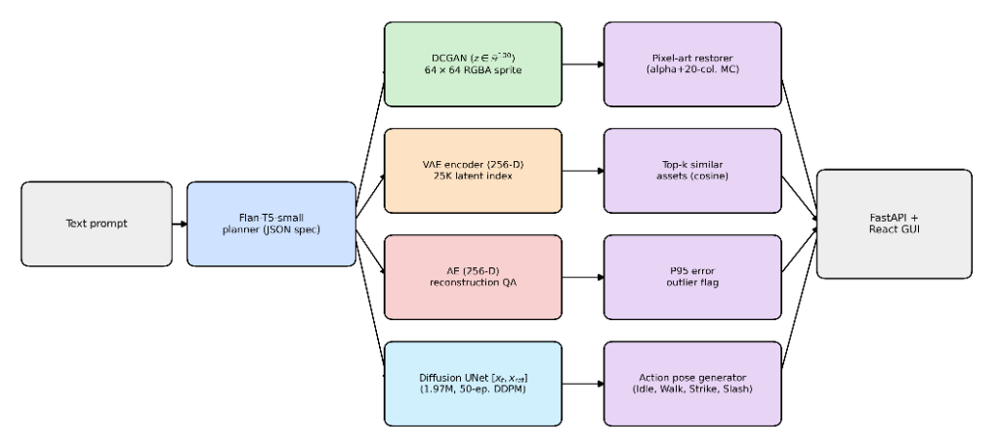

★ Key Objectives
Multi-Stage Coordinated PipelineArchitecture: 4-Layer Conv2D Encoder-Decoder, 256-D continuous bottleneck, MSE loss.
Role: Pixel-Grid Quality Assurance & Outlier Anomaly Rejection.
Architecture: Probabilistic Conv2D Encoder, Gaussian Reparameterization (μ + σ⊙ε), 256-D latent.
Role: Smooth Latent Manifold Structuring & SLERP Asset Morphing.
Architecture: 4-Stage NN-Upsampling Generator (z ∈ ℝ¹²⁸ → 64×64×4 Tanh), L1 Feature-Matching D.
Role: Rapid Novel Character Archetype Synthesis.
Architecture: Seq2Seq Encoder-Decoder with JSON Delimiter Token Injection (IDs 32100/32101).
Role: Prompt Decomposition to Structured Game Spec JSON.
Architecture: Action/Pose-Conditioned U-Net with inter-frame velocity objective & reverse DDIM sampling.
Role: Single-Image Kinematic 8-Frame Walk Cycle Synthesis.
End-to-End System Architecture (Research Paper Specification)

Key Challenges & Scientific Learnings
- • Velocity Dominance: v-prediction eliminated color shift & blur inherent in ε-diffusion.
- • Orientation Conflict: Unconditional GANs require strict front-facing curation to avoid lopsided anatomy.
- • Unsupervised QA Gating: Autoencoder MSE provides reliable thresholding (P95: 1.31×10⁻³) without negative labels.
- • Reverse DDIM Efficiency: Deterministic 50-step sampling completes walk cycles in <1.5s on CPU.
- • Palette Snapping: Downstream k-Means locks continuous DCGAN outputs to 16-color retro palettes.
Performance Metrics — Standardized Benchmark Protocol (50 Epochs, Effective Batch Size 32)
| Metric | Conv AE | VAE (256-D) | Flan-T5 |
|---|---|---|---|
| Primary Loss | 4.56×10⁻⁴ | 3.17×10⁻³ | 0.5228 |
| Reconstruction PSNR | 35.36 dB | 26.59 dB | N/A |
| Structural SSIM | 0.961 | 0.843 | N/A |
| Accuracy / Validity | 94.2% Anomaly | 84.40% k-NN | 100.0% Schema |
| Parameters | 3.24M | 13.68M | 60.5M |
| Metric | DCGAN (46K Front Run) | Velocity Diffusion U-Net |
|---|---|---|
| Terminal Loss | 0.5212 / 0.0091 | 1.06×10⁻¹ (Val: 3.12×10⁻²) |
| Diversity / IoU Accuracy | L₁ Div: 12.15 | Limb IoU: 0.812 (Unseen) |
| Quality Metric | Laplacian: 64.37 | PSNR: 27.84 dB / SSIM: 0.862 |
| Alpha Mask Purity | 94.80% | 96.10% |
| Inference Latency | 4.8 ms (Single Pass) | 24.2 ms / step (DDIM on CPU) |